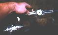
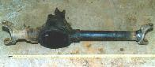

Over the years there has been much written about shortening axle housings, but it has been rare to ever see anything written by a shade tree mechanic (or is that a Shade Tree Howler Monkey?). No one has ever written a guide to help you do it yourself (at least not that I know of). Because of this, I wasn't sure I'd be able to do the job myself. Among the rumors I had heard were that:
Here's what I did and how I did it.
I started with an axle housing from a narrow track '78 Cherokee and knowledge I gained from the Jeep tech list and members of my club. I lucked into getting the complete front end for $40, so I wasn't too worried about ruining it.
The first thing I did was to set the Dana 44 in front of my Jeep and start measuring. The spring pads were about 32 inches apart, 4 inches wider than my CJ. The overall length was around 61 inches from wheel mounting surface to wheel mounting surface and my CJ wide-track front end was 56 inches. The distance from the spring pads to the wheel mounting surface was pretty close to my CJ, so I reasoned that I could leave the short side alone and shorten the long side about 4 inches. This agreed with everything I had read on Jeep-tech, so I decided to go ahead with it.
I also checked caster and pinion angles. My CJ had about 0 degrees of caster, the spring pads were parallel with the floor and the pinion was about 5 degrees up relative to the floor. This isn't the standard way of measuring pinion angle, I was just trying to measure the relative angle between the spring pads and pinion angle, so I could duplicate it on the new front end. Then I measured it out on the Dana 44 front end. With the spring pads parallel to the floor, the pinion was 12 degrees up and the caster was at 0 degrees. This is a great thing, it meant I could cut 7 degrees out of the cast in the spring pad on the housing, the other spring pad has to be moved anyway. The result would be a pinion angle of 5 degrees up (relative to the floor) and 7 degrees of caster without cutting and turning the inner knuckle on the short side.
The first step was to remove the brakes, rotors, spindles and outer knuckles, shafts, and differential carrier. This is all well-documented elsewhere, so I won't go into detail here. I stripped it down to the bare housing except I left the pinion in (no reason, I just didn't feel like removing it). Next I used a 4" grinder to remove the spring perch and shock mount from the long axle tube. I gouged the tube a bit in doing this so I welded up the gouges and ground them smooth again.
Next, I re-cut the spring perch cast into the center section to give me the proper pinion angle. I had to take off more than 1/4" of metal at one end and taper down to none removed at the other. I started by setting the axle on jack stands with a third jack stand under the pinion. I carefully adjusted and shimmed the jack stand under the pinion until I had the housing positioned just right. I set it up so that the final pad angle would be correct if I held the grinder level. I installed a new wheel on the grinder and started at the thick end. I pushed the grinder across using the edge to cut away the metal, stopping to check the angle several times. Eventually I was finished. The spring pad looks great and is perfectly flat. I am very pleased with the results, although it did take a long time and I went through three grinding wheels.
 The next step was the actual cutting of the tube. I brought the housing down to my friend Tim Norstad's house because he has a chop saw and is always generous with his tools. I had already measured and marked the tubing at home. This is not difficult, just remember that the tube sticks into the inner knuckle a bit, so don't cut the tubing off at 4" away from the knuckle. I'm not going to give an actual measurement here because I'm not positive everyone's axle housing will be identical to mine. I purposely cut my tubing about 1/8" short in case I decided to weld where the end of the tube meets the knuckle. The tubing wasn't any more difficult to cut than any other piece of metal that size. After the tube was cut to size, I had a short piece of tube still attached to the inner knuckle. Tim and I cut that tube off as close to the knuckle as possible.
When I got home, I clamped the inner knuckle in my vice and started grinding off the bead and old tube where it attached to the knuckle. The guys in my club said to grind until I just started to see a line or crack between the tube and the knuckle. Their next suggestion was to press out the old tube with a hydraulic press. I don't have a press so I tried hammering it with a 3 lb hammer and punch. This did nothing. Then I put the knuckle back in the vice, took my hacksaw apart and put the blade through the center and reconnected it. I made two cuts about 90 degrees apart and then easily drove out the pieces of tubing one at a time.
This left me with a free outer knuckle and a tube it needed to go on. I had heard that I would definitely need a press for this part but I had done it all myself so far, I wasn't going to stop here without at least trying. I cleaned the rust and weld splatter off the tube and ground a small bevel all the way around the edge. Next I started tapping the knuckle on with a 1 lb ball peen hammer. It was working. I had to hit it hard, but not so hard I was worried about bending breaking anything.
After the outer knuckle was on 1/2" I stopped and set the caster. To do this I set the housing up on jack stands again, this time I set it so that the surface for the nut of the lower ball joint on the still attached knuckle was level. Then I tapped the free knuckle until it matched. From here I drove it on the rest of the way, stopping may time to measure. After I had it in place I spent 2 hours with a tape measure and angle finder making sure everything was right. I tack welded it and let it sit for a week before I spent another hour measuring again.
The only thing left was to weld the knuckle on. If you aren't sure about your welding skills or your welder doesn't have a high enough amp rating it would be best to leave it to a professional welder. One important note is that the weld doesn't carry the weight of the vehicle because the tubing sticks into the inner knuckle about an inch. I have heard of people butt welding the knuckle to the tube (they didn't remove the old tube from the knuckle, just cut it flush and rewelded). This sounds incredibly weak and dangerous to me, not to mention the difficulty of lining up the pieces. The fact that the tube is so far into the knuckle and such a tight fit in the knuckle gives me the confidence to know it is strong and lined up properly.
I re-installed the outer knuckles, spindles and rotors to check out the front end. The actual distance from wheel mounting surface to wheel mounting surface is 57 inches. My wheels will stick out 1/2" farther than they did before. All the angles check out right, and it looks like it should bolt in with no problems.
What's left? I need to send the long side inner axle shaft in to be shortened. I need to weld the spring pad and shock mount for the long side back on. I need new ball joints and U-joints. I need to decide about the steering and brakes.
There are many steering and brake options available to me by mixing and matching Jeep, Chevy, Ford and Scout II disc brake parts, so this won't be a problem. My current thought is to use the Cherokee outer knuckles, spindles and Chevy type brakes with F-150 rotors (F-150's have the same 5 on 5 1/2" wheel bolt pattern as Jeep CJ's). There are two advantages to this: 1) I will get the stronger and less leaky internal type lockouts and 2) The Cherokee tie rod mounts on top of the knuckles and is much larger and stronger than a CJ tie rod.
Another possibility is using my stock outer knuckles, spindles, brakes and steering with Scout II outer axle shafts. Scout II outer axle shafts use the Dana 44 sized U-joint but are otherwise similar to CJ outer shafts. Or I could use non-disc brake CJ outer knuckles with my stock steering, Cherokee spindles, Chevy type brakes and F-150 rotors and hubs or I could... The possibilities are limitless.
{kind=link}
{kind=link}
{kind=link}
{kind=link}